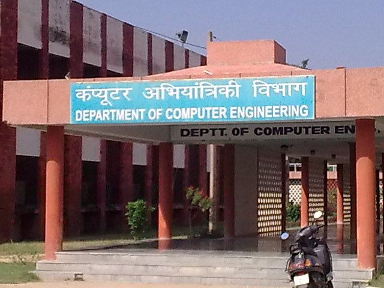

DEPARTMENT OF COMPUTER ENGINEERING

The department started offering B.Tech. Programme in Computer Engineering in 1987 with initial intake of 30
students and subsequently raised to 92. Department also started B.Tech programme in Information Technology (IT) in
2006 with present intake of 92 students. The department is proud to have a record of almost 100% placement for
last 10 years. The department also offers two M.Tech. programs, one in Computer Engineering and other in Cyber
Security. Department started Ph.D. program in 2002. So far 20 Ph.D.s have been awarded and 39 PhDs are in
progress. Currently there are five sponsored projects undergoing in the department.
Faculty of the department have specialized areas for advanced studies and research in Distributed Computing,
Software Engineering, Computer Networks, Database and Data Mining, Natural Language Processing, Information and
Cyber Security, Image Processing.
The department is well equipped with state-of-the-art laboratories of all major domains of Computer Engineering
and Information Technology with excellent intranet, servers, hardware and software support.
Each year, many students of the department get selected for higher studies in world’s most reputed Universities
and Institutes. The department is equally active in research with many quality publications each year in IEEE,
Sciencedirect, ACM, Springer, Wiley etc. For the overall development we also cover the other aspects of life like
Health management, moral and ethical development of the students.
The Department's UG programs B. Tech Computer Engineering and Information Technology are NBA Accredited from
Academic Year upto 2022-23
DEPARTMENT OF ELECTRONICS AND COMMUNICATION ENGINEERING

The branch of Electronics and Communication Engineering was started in the year 1971 under the aegis of Electrical
Engineering Department. The “Department of Electronics and Communication Engineering” came into existence in the
year 1973. In 1987, Computer Engineering branch was also started and the department was renamed as “Electronics,
Communication and Computer Engineering”. In 2003, the department was again renamed as “Electronics and
Communication Engineering” because of inception of “Computer Engineering Department” separately. The department
started M.Tech. program in ECE and VLSI design in the year of 1987 and 2007, respectively. Presently, M.Tech.
(VLSI Design) is being offered by the School of VLSI Design and Embedded Systems independently.
The Department's UG program B. Tech ECE is NBA Accredited for six years i .e. from Academic Year 2017-18 to
2022-23